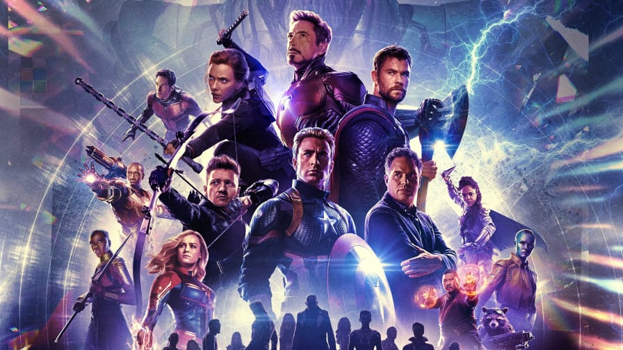

Vingadores ou Os Vingadores (The Avengers no original em inglês) são um grupo de super-heróis de história em quadrinhos publicados nos Estados Unidos pela editora Marvel Comics. O grupo também aparece em adaptações da Marvel para cinema, desenho animado e jogos eletrônicos. Os heróis mais conhecidos são a formação original de Thor, Homem de Ferro, Homem-Formiga e a Vespa, e Hulk, além de seu primeiro recruta, o Capitão América (introduzido na quarta edição). A equipe, inspirada na Liga da Justiça da DC Comics, tem molde de um clube, inclusive com o mordomo do Homem de Ferro, Jarvis, os servindo. No Universo Marvel, a equipe tradicionalmente é a primeira a ser chamada pelo governo dos EUA quando defrontado por desafios de ordem cósmica, e tem bases em Nova York e uma ilha na costa americana.